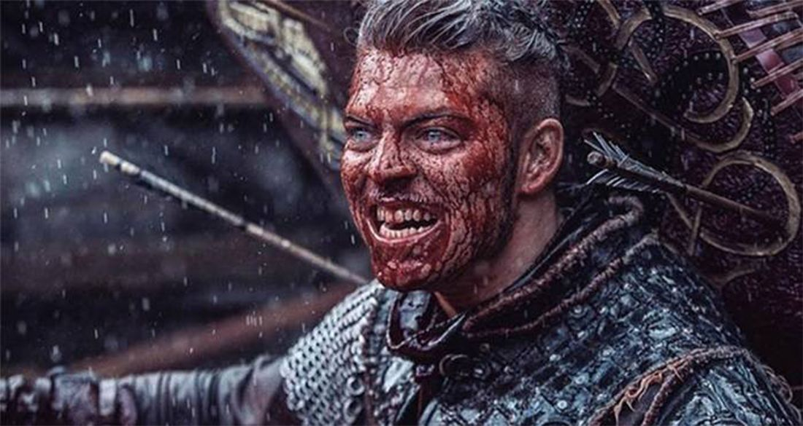

Ivar the Boneless (Old Norse: Ívarr hinn Beinlausi; Old English: Hyngwar), also known as Ivar Ragnarsson, was a
Viking leader who invaded Anglo-Saxon England.
According to Tale of Ragnar Lodbrok, he was the youngest[2] son
of Ragnar Loðbrok and his wife Aslaug. His brothers included Björn Ironside, Halfdan Ragnarsson, Hvitserk, Sigurd
Snake-in-the-Eye and Ubba.
The origin of the nickname is not certain. "Ívarr beinlausi" could be translated to "Ivar legless", but "beinlausi"
could also be translated as "boneless", since "bone" and "leg" translates to the same word, "ben", in
Danish.[citation needed] Several of the sagas describe him as lacking legs/bones, while a passage in Ragnarssona
þáttr (also known as the tale of Ragnar's sons) suggest it refers to male impotence[3][original research?] with
Ivar's "Bonelessness" being merely figurative.
According to the Tale of Ragnar Lodbrok, Ivar's bonelessness was the result of a curse. His mother Aslaug was
Ragnar's third wife. She was described as a völva, a type of seer or clairvoyant. She said that she and her husband
must wait three nights before consummating their marriage after his return following a long separation (while he was
in England raiding). However, Ragnar was overcome with lust after such a long separation and did not heed her words.
As a result, Ivar was born with weak bones.[4]
Another hypothesis is that he was actually known as "the Hated", which in Latin would be Exosus. A medieval scribe
with only a basic knowledge of Latin could easily have interpreted it as ex (without) os (bone), thus "the
Boneless",[5] although it is hard to align this theory with the direct translation of his name given in Norse
sources.[4]
While the sagas describe Ivar's physical disability, they also emphasise his wisdom, cunning, and mastery of
strategy and tactics in battle.[6]
He is often considered identical to Ímar, the founder of the Uí Ímair dynasty, which at various times, from the
mid-ninth to the 10th century, ruled Northumbria from the city of York, and dominated the Irish Sea region as the
Kingdom of Dublin.[7]
